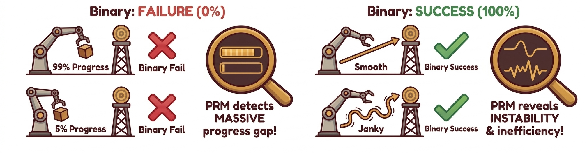
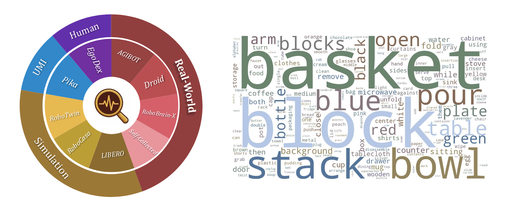
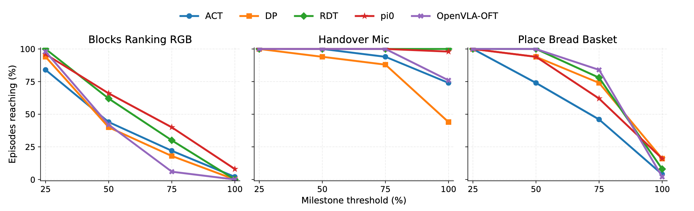
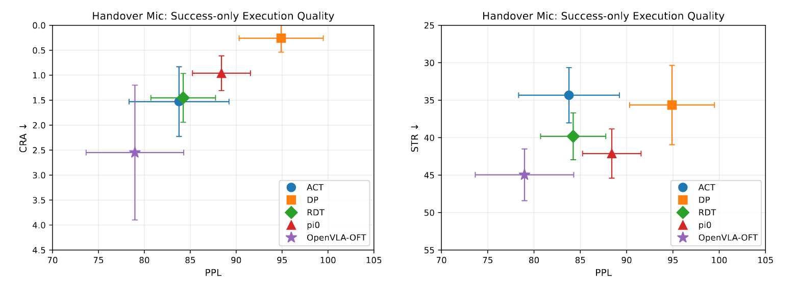
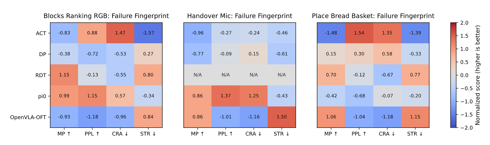

PRM-as-a-Judge
 A Dense Evaluation Paradigm for Fine-Grained Robotic Auditing
A Dense Evaluation Paradigm for Fine-Grained Robotic Auditing
A dense evaluation paradigm that turns trajectory videos into interpretable signals for progress depth, execution quality, and failure mechanisms in long-horizon robotics.
Binary success rate hides where a policy actually progressed and how it failed. PRM-as-a-Judge converts rollout videos into dense OPD signals that expose progression depth, execution quality, and failure mechanisms. This makes model comparison and diagnosis more transparent, actionable, and reproducible.
1. Why Success Rate is No Longer the Full Story
As robotic manipulation graduates from simple "pick-and-place" to complex, contact-rich marathons, relying solely on Success Rate is like trying to judge a symphony by its final note. It's a classic case of throwing the baby out with the bathwater.
The "Success/Failure" binary creates two massive blind spots. First, there is a resolution gap: near-complete failures and early collapses are both flattened to zero, even though they reveal very different policy maturity. Second, there is diagnostic opacity: a nominal "success" can still hide instability, regressions, and excessive trial-and-error.

2. From Outcome to Audit
To recover the information lost in binary labels, we shift our focus from the finish line to the entire race. For long-horizon tasks, the real difference between models lies in how deep they get into a task, how stable they stay, and exactly where they fail. In the real world, we don't have "privileged" data like exact object positions or contact forces given by simulators.
Our solution is to use the evolution of visual states as a proxy for physical progress. We assign a task-conditioned progress potential Φ(s)∈[0,1] to every state. This turns a simple video into a continuous progress curve that we can compare, break down, and diagnose.
Core idea: map visual state evolution into a task-conditioned progress potential.

3. What Makes a Model a Qualified Judge?
We represent an execution as an information-state trajectory τ = (x0, x1, ..., xT), where xt is the task-relevant information available to the judge at time t. For a fixed instruction, we assume a progress potential Φ(xt) in [0, 1] toward completion.
A valid dense evaluator should satisfy two properties simultaneously: macro-consistency for additive, path-independent aggregation, and micro-resolution for distinguishing fine-grained task-relevant state changes.
Macro-Consistency via Temporal Additivity
Progress measured on a long segment should match the sum of progress measured on its subsegments.
In practice: episode-level progress should not change when we re-partition the same trajectory in time.
Micro-Resolution of Progress Signals
Nearby states with meaningful physical differences should induce non-degenerate progress differences.
In practice: the judge should separate subtle gains, regressions, and stagnation, instead of collapsing them into near-constant scores.
To make macro-consistency and micro-resolution compatible, we define pairwise progress on one shared potential scale:
Interpretation: one scalar reference keeps long-horizon additivity and frame-level sensitivity coherent in the same evaluator.
4. OPD: Deconstructing a Single Execution into Three-Tier Signals
Building on the progress potential Φ, we construct OPD (Outcome-Process-Diagnosis) to decompose one execution into interpretable auditing signals at three complementary levels.
Outcome
How far did it get?
Outcome summarizes progression depth toward task completion.
MC
Milestone Coverage
Furthest milestone reached along the execution trajectory.
MP
Max Progress
Highest continuous progress value attained during the episode.
Process
How well did it execute?
Process evaluates execution quality and trajectory efficiency.
PPL
Path-weighted Progress Length
Measures path efficiency: higher values imply smoother, less redundant execution.
Diagnosis
Why did it fail?
Diagnosis disentangles failure mechanisms such as regression and stagnation.
CRA
Cumulative Regret Area
Quantifies regression severity and duration after reaching better states.
STR
Stagnation Ratio
Fraction of steps with negligible task-relevant progress change.
Reading guide: OPD is a 3-layer framework, operationalized by 5 peer metrics (MC, MP, PPL, CRA, STR).
At a glance
Outcome: MC and MP quantify how far execution reaches and its peak progress state.
Process: PPL measures whether progress is achieved with efficient, non-redundant motion.
Diagnosis: CRA and STR separate regression-heavy failures from stagnation-heavy failures.
Together, these five metrics answer five practical questions: how far it reached, its peak capability, path efficiency, regression severity, and stagnation duration.
5. RoboPulse: The "Physical Microscope" for Evaluator Verification


To verify whether an evaluator possesses true microscopic resolution, we constructed the RoboPulse benchmark. It simplifies evaluation into a pairwise judgment task: given a task description and two states from the same trajectory, the evaluator must determine if the latter state represents "Progress" or "Regression." This design bypasses the need for absolute progress labeling and focuses on the core capability: can the evaluator reliably distinguish directionality when physical changes are minute?
- Dataset Scale: RoboPulse comprises 1,800 pairwise judgment samples derived from 1,622 episodes across 816 tasks.
- Diversity: Data sources include real-world robots, simulations, UMI, and human first-person perspectives.
- Granularity: Samples are categorized into Small / Medium / Large relative progress spans to systematically test the evaluator's physical resolution across different scales.
Experimental Results:
PRM-based judges dominate all spans, with the largest gap on Small-hop cases.
Evaluators based on PRM (Process Reward Models) demonstrate an overwhelming advantage. Taking Robo-Dopamine as an example, it achieves an overall accuracy of 0.83, maintaining 0.80 even in the most challenging "Small-hop" interval.
In contrast, general large models like Gemini and Qwen3-VL-8B only reach overall accuracies of 0.66 and 0.59, respectively. On "Small-hop" judgments, Gemini and GPT-5.2 perform at 0.54 and 0.47—nearly equivalent to random guessing. This proves that the core strength of PRM lies not in coarse semantic understanding, but in the acute capture of the physical evolution process. Once a judge possesses verifiable microscopic resolution, it can be further applied to the systematic analysis of real-world policy trajectories.
6. Dense Trajectory Auditing Reveals Strategic Discrepancies
After constructing and verifying our judge, we applied PRM-as-a-Judge to a systematic audit of real-world policy trajectories. Specifically, we selected 7 manipulation tasks with distinct long-horizon features from RoboTwin 2.0 and performed a unified evaluation of 5 representative baseline policies.
By leveraging the trajectory-level signals provided by OPD, we move beyond simply comparing "whether a model completed a task" to a systematic analysis of progression depth, success quality, and failure mechanisms.
For continuously updated rankings and task-level comparisons, see the Leaderboard.
6.1 Phased Reachability and Failure Localization
A 0% success rate doesn't mean a policy learned nothing—it just fails to tell you where things fell apart. By tracking how deep a model actually pushes into a long-horizon task (using our MC and MP metrics), we can peek under the hood and uncover two strategic realities that binary labels hide:
- The "Last-Mile" Illusion: Policies rarely fail from the starting line. In Blocks Ranking RGB, almost every baseline breezes through the early stages with massive reachability (MC@25 > 84). Yet, when it comes to actually closing the deal (MC@100), performance plummets to near zero. They aren't failing to learn the task; they are specifically tripping at the finish line.
- Not All Zeros Are Created Equal: A near-miss and an early breakdown both score a flat 0%, but physically, they are completely different. Dense auditing finally separates models that "fail the same way" from those that "fail at different locations." Even though both ultimately drop the ball, π0 fights its way much closer to the goal (MC@75 = 40), whereas OpenVLA-OFT falls apart almost immediately (MC@75 = 6).

6.2 Execution Quality Under Success Conditions
A "success" tag tells you nothing about execution quality—binary results hide whether a task was done smoothly, efficiently, or through messy trial and error. By measuring process and diagnosis metrics only on successful runs, we uncover two key truths buried by simple success rates:
- Success ≠ High Quality: Even when policies succeed, their performance varies sharply. In Handover Mic, DP delivers near-perfect execution: success-conditioned PPL = 94.9, CRA = 0.26. OpenVLA‑OFT, by contrast, shows CRA = 2.55—its successes rely on repeated corrections and unstable adjustments.
- The Precision–Reliability Gap: Top-tier execution doesn't mean consistent reliability. DP achieves elite quality when it succeeds, but its overall success rate hits only 44%. Some policies excel at clean, precise wins—but cannot sustain that quality across all rollouts.
Our OPD metrics go beyond "success/failure" to separate smooth, high‑quality successes from inefficient, janky ones—revealing tradeoffs that shape real‑world robot performance.

Efficiency view.
Stability and regret view.
6.3 Failure Mechanisms and Strategy Fingerprinting
A single "failure" label reveals nothing about why policies fail. Binary evaluation erases the real physical mechanisms behind breakdowns. By analyzing OPD metrics on failed episodes, we uncover clear, interpretable failure fingerprints invisible to traditional methods:
- Unique Failure Signatures: Each policy family shows consistent, task-stable failure patterns. On Place Bread Basket, OpenVLA-OFT fails late with severe regression (MP=92.6, CRA=26.3), while ACT fails early from prolonged stagnation (MP=73.1, STR=65.4).
- Stagnation vs. Regret Failure Modes: Failure fingerprints clearly distinguish two root causes. On Handover Mic, DP fails from stalled interaction (high STR=57.2), while OpenVLA-OFT fails from unstable correction loops (low PPL=66.2, high CRA=5.66).
- Actionable Optimization Guidance: Stagnation failures demand better end-effector stability and contact maintenance; regression failures require stronger error absorption and closed-loop correction; low efficiency calls for fewer redundant motions.
Our OPD framework turns vague failures into clear diagnostic signatures—delivering direct, targeted guidance for policy improvement.

7. Interactive Trajectory Explorer
Experience the demo firsthand below. As you drag the timeline, the page dynamically aligns the video playback with the real-time progress curve, highlighting the exact position within the full trajectory. The five core metrics for the episode—MC, MP, PPL, CRA, and STR—are updated and displayed concurrently.
This module provides a complete temporal audit of an individual execution. Watch as upward trends, regressions, and stagnations on the curve perfectly mirror the robot's physical actions, enabling a precise, frame-by-frame understanding of the rollout's evaluation.
8. Conclusion
What PRM-as-a-Judge introduces is not merely a supplement to the traditional success rate, but a fundamental shift in robot evaluation: moving from binary endgame judgments to the precise characterization of the execution process itself. Through task-conditioned progress potential, the trajectory-level OPD metric system, and the systematic verification of microscopic resolution via RoboPulse, we transform an execution trajectory—once reductively summarized as a simple success or failure—into interpretable, comparable, and diagnosable process signals.
For increasingly long-horizon and complex robotic tasks, a single binary success label is no longer sufficient to fully capture the nuances of model behavior. Fine-grained trajectory auditing not only reveals the intrinsic differences between policies in terms of progression depth, execution quality, and failure mechanisms, but it also provides a highly targeted foundation for downstream model analysis and system refinement.
Final takeaway: Dense trajectory auditing turns robot evaluation from a binary scoreboard into an actionable analysis workflow for diagnosis, comparison, and iteration.
We welcome collaboration and feedback from the robotics community. If you have questions or would like to work with us on dense trajectory evaluation, please reach out at jiyuheng2023@ia.ac.cn.
Author Team
Core Team
All core team members contributed equally to this project.
- Yuheng Ji (Team Leader)
- Yuyang Liu
- Huajie Tan
Other Contributors
Xuchuan Huang, Fanding Huang, Yijie Xu, Cheng Chi, Yuting Zhao, Huaihai Lyu, Peterson Co, Mingyu Cao, Qiongyu Zhang, Zhe Li, Enshen Zhou
Advisors
Pengwei Wang, Zhongyuan Wang, Shanghang Zhang, Xiaolong Zheng
Citation
If this blog or evaluation pipeline helps your work, please cite us:
@article{prm_as_a_judge_2026,
title = {PRM-as-a-Judge: A Dense Evaluation Paradigm for Fine-Grained Robotic Auditing},
author = {Ji, Yuheng and Liu, Yuyang and Tan, Huajie and others},
year = {2026},
url = {https://arxiv.org/abs/2603.21669}
}Copy this BibTeX entry into your bibliography.